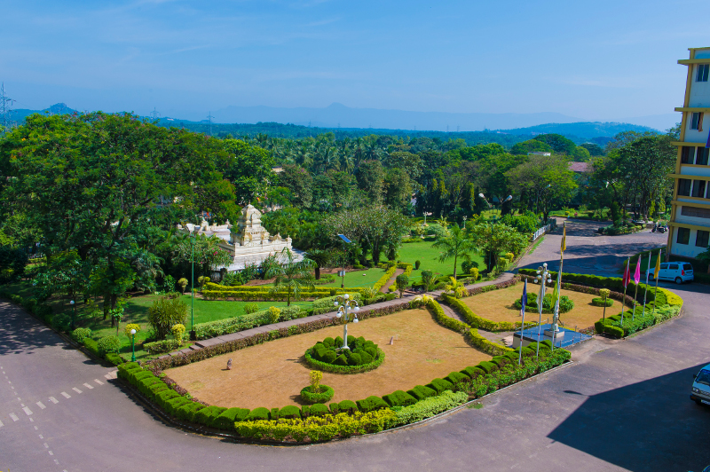

NMAM INSTITUTE OF TECHNOLOGY
N.M.A.M. Institute of Technology (NMAMIT), full name Nitte Mahalinga Adyanthaya Memorial Institute of Technology,
is an autonomous engineering college in Nitte, Karnataka, India. It was established in 1986, with programs in computer science and electronics engineering.
Currently it offers B.E. in Biotechnology Engineering, Computer Science and Engineering, Electronics and Communication Engineering.
It is one of the best engineering college in Karnataka.
The college is run by the Nitte Education Trust, which was founded in 1979 by Justice Kowdoor Sadananda Hegde, former Chief Justice of the
Supreme Court and former Speaker of the Lok Sabha.[2] The college is affiliated to the Visvesvaraya Technological University, Belgaum.
It received the autonomous status in 2007-08.
N.M.A.M. Institute of Technology was ranked 128th among engineering colleges by the National Institutional Ranking Framework (NIRF) in 2019.
The College is situated in the village of Nitte in an interior area of Udupi district. It is around 57 kilometers from Mangalore.
The various departments, laboratories, and hostels are located on a 100-acre (0.40 km2) campus.
GALLERY
